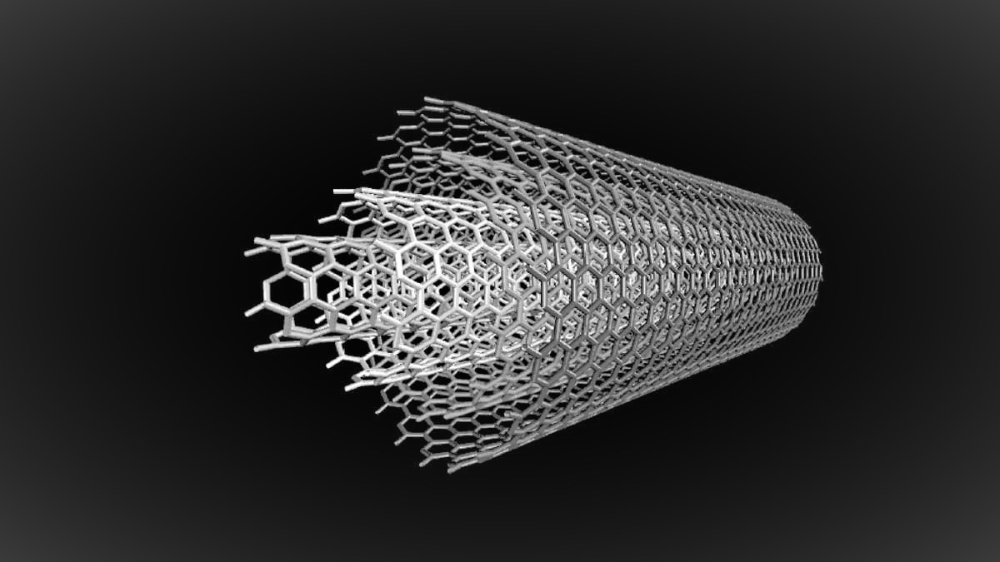
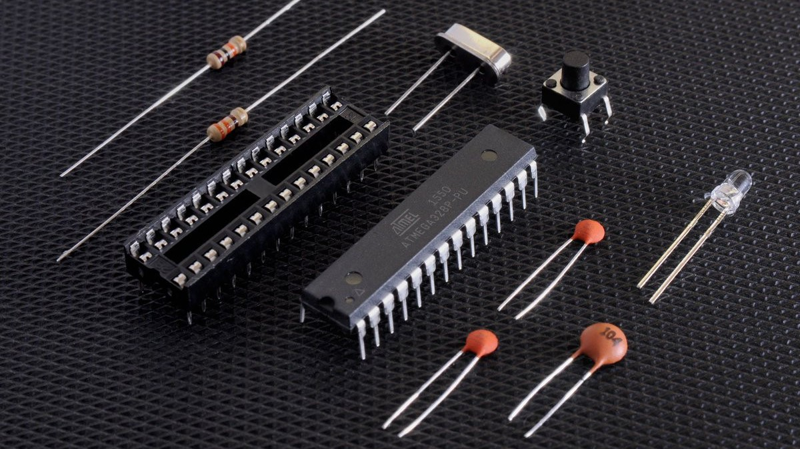
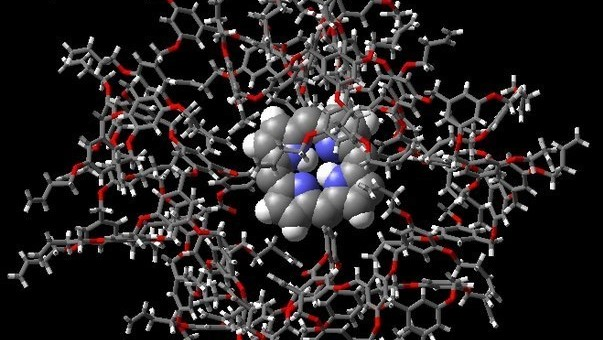
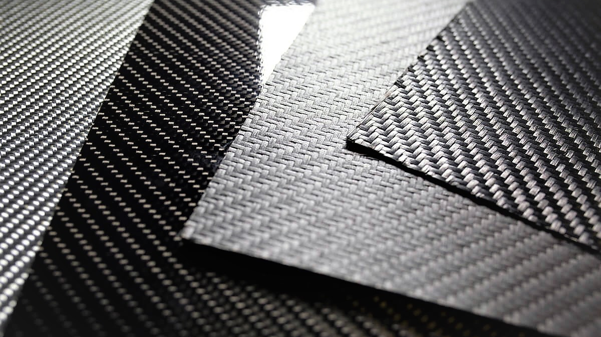

-Нанотехнологии-
Что такое нанотехнологии?
-
Это область науки, которая занимается разработкой и использованием крошечных материалов и устройств. Их размер исчисляется от единицы до сотни нанометров. Простыми словами, нанотехнология — это наука о малом. Специалисты могут визуализировать, измерять и моделировать материалы в пределах этого крошечного диапазона.
Слово «нано» пошло от греческого nanos, что переводится как «карлик». Термин «нанотехнология» появился в 1974 году, его предложил японский физик Норио Танигути.
Быстрый скачок в развитии сферы случился в 1980-х годах, когда был изобретен сканирующий туннельный микроскоп. Так ученые смогли изучить атомные и молекулярные составляющие поверхностей.
Нанотехнологии призваны более эффективно расходовать энергию, отслеживать состояние экологии, решать задачи здравоохранения, увеличивать объемы производства при сокращении затрат.
Примеры областей, где они используются:
1)наноматериалы,
2)наноэлектроника,
3)наномедицина,
4)нанофильтры,
5)солнечные батареи,
6)пищевая промышленность.
Где используются нанотехнологии?
Нанотехнологии по праву можно назвать одной из наиболее перспективных сфер настоящего и будущего. Ответ, почему все так устроено, кроется в практичности.
Применение нанотехнологий широко распространено в сферах электроники, здравоохранения, питания. Возможно, мы не всегда осознаем присутствие нанотехнологий в нашей жизни. Но с каждым годом они все больше интегрируются в быт и каждодневные занятия.
Вы хотите позвонить любимым, отправиться на пробежку и измерить сердечный ритм, сварить кофе в кофемашине? Наши желания и потребности притягивают все больше устройств, которые создаются с помощью нанотехнологий.
В нашу жизнь они начали активно приходить в нулевых. На волне этого бума развитые страны специально выделили бюджеты, чтобы как можно быстрее развивать направление.
Что такое и где применяются наноматериалы?
Наноматериалы — это наноструктуры, материалы или химические соединения, которые создали с помощью наночастиц. Размер их составляющих находится между 1 и 100 нанометрами.
Благодаря современным наноматериалам компании конструируют сложные электронные устройства, которые используются в авиационной и космической сферах, для сборки мощных компьютеров, видеотехники, помогают диагностировать медикам различные заболевания, а также быстро передавать информацию.
Наноматериалы различаются по типам. Они могут быть представлены в виде пленок, частиц, трубок, волокон, дисперсий, кристаллов.
Выделяют четыре основных типа наноматериалов:
1)Материалы на основе углерода. Состоят в основном из углерода и представлены в виде полых сфер или трубок. Среди полезных свойств — способность улучшать качество пленок и покрытий, с их помощью могут создаваться более прочные и легкие материалы. Также они могут быть подспорьем в электронике и наноэлектронике.

2)Полупроводники — основа современной электроники. Вся электроника от суперкомпьютера до стиральной машины в вашей квартире основана на полупроводниках, из которых создаются чипы и микроконтроллеры. 
3)Дендримеры. Это полимеры наноразмера, которые используются в химической промышленности в роли катализаторов. 
4)Композиты. Материалы, которые изготавливаются при помощи соединения наночастиц или наночастиц с наноматериалами. Готовые материалы активно используются в автомобилестроении, для возведения зданий, мостов, в стоматологии и дизайне. Композиты улучшают механические, термические и огнестойкие свойства при взаимодействии с другими веществами и материалами.Если разделить объект на нанометры, изменяются его физические и химические свойства. У таких материалов могут улучшаться характеристики, например, уменьшаться вес и возрастать прочность.
